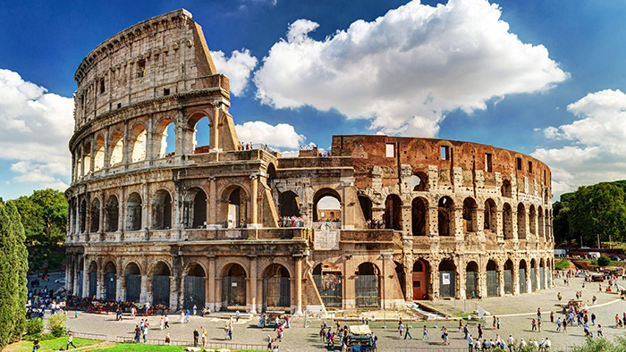

Travel Of Dreams
Amazing
MAKE THE TRIP OF YOUR DEAMS

Dubai
En los Emiratos Árabes, 200 kilómetros al norte de su capital Abu Dhabi, se encuentra Dubái, la ciudad del mundo que más ha crecido en la última década, un destino turístico de lujo cada día más solicitado por viajeros de todo el mundo. En nuestra guía turística podrás descubrir todos los secretos de esta ciudad que ha comenzado a darse a conocer a finales del siglo XX.
